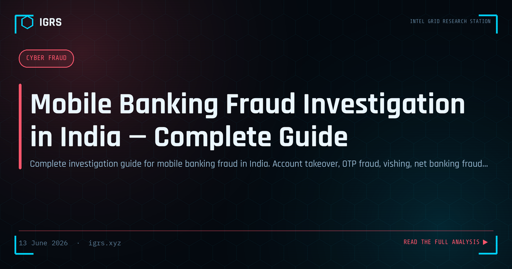

Mobile Banking Fraud Investigation in India — Complete Guide
Mobile Banking Fraud in India
Mobile banking fraud costs Indian consumers thousands of crores annually. As banking has shifted to smartphones, fraudsters have followed, deploying sophisticated vishing attacks, screen-sharing scams, OTP phishing, and insider fraud. For investigators, mobile banking fraud combines financial tracing, device forensics, and telecom intelligence. This guide covers the complete investigation methodology.
Common Mobile Banking Fraud Types
| Type | Method |
|---|---|
| Vishing | Fake bank calls extracting OTP/credentials |
| Screen sharing fraud | Victim installs AnyDesk/TeamViewer, criminal takes control |
| OTP phishing | Fake links harvesting credentials and OTPs |
| Insider fraud | Bank employees misusing customer data |
| Card-not-present fraud | Online transactions using stolen card details |
Immediate Evidence Collection
When mobile banking fraud is reported, preserve evidence immediately:
- Bank statement with all unauthorised transactions and UTR numbers
- Call recordings if the victim recorded the fraud call
- SMS messages — exact text, sender ID, timestamps
- Any links clicked — preserve and analyse via URLScan
- App installation logs if a screen-sharing app was involved
Banking Channel Investigation
The financial trail is traced through legal process:
- Serve a Section 94 BNSS notice on the victim's bank for the full transaction trail
- Obtain the IP address of the fraudulent login session
- Capture the device fingerprint logged by the bank
- Trace beneficiary account details and serve notice on the receiving bank
Telecom Evidence
| Evidence | Investigative Value |
|---|---|
| CDR of fraudster's number | Contact network and patterns |
| TAFCOP lookup | Aadhaar-linked SIM identification |
| Cell tower data | Physical location during fraud call |
Bank Liability Under RBI Guidelines
RBI's Master Direction on customer protection establishes clear liability rules. With prompt reporting and no customer negligence, the bank bears zero liability and must refund:
| Reporting Time | Customer Liability |
|---|---|
| Within 3 working days | Zero (bank refunds fully) |
| 4-7 working days | Limited (capped amount) |
| Beyond 7 days | Customer may bear the loss |
The bank must refund within 10 working days of the complaint. Victims should escalate to the RBI Ombudsman if the bank does not act.
Investigating Screen-Sharing Fraud
Screen-sharing fraud deserves special attention because it is rampant. The fraudster, posing as bank support, convinces the victim to install a remote-access app (AnyDesk, TeamViewer, QuickSupport), then either directly operates the banking app or captures credentials and OTPs in real time. Investigation examines the installed app's logs, the connection records, and the timing correlation with fraudulent transactions. The key public advisory: no legitimate bank ever asks customers to install remote-access apps.
Insider Fraud Investigation
Where bank employees misuse customer data, the investigation shifts to internal access logs, identifying which employee accessed the victim's data and when. Section 43A IT Act (compensation for failure to protect data) becomes relevant against the bank, alongside the criminal sections against the employee. Insider cases require careful handling of the bank's internal records and audit logs.
Legal Sections
| Section | Act | Offence |
|---|---|---|
| Section 66C | IT Act 2000 | Identity theft |
| Section 66D | IT Act 2000 | Personation using computer |
| Section 318 | BNS 2023 | Cheating |
| Section 43A | IT Act 2000 | Data protection failure (vs bank) |
What Victims Should Do
Immediate action is critical: call the bank's 24x7 fraud helpline to block the account, call 1930 and file at cybercrime.gov.in, obtain the complaint number, request a freeze on the beneficiary account, and preserve all evidence. Reporting within three working days protects the victim's right to a full refund under RBI rules.
Building the Investigation
A mobile banking fraud investigation combines the financial trail (bank records, beneficiary tracing), device intelligence (fingerprints, IP, installed apps), and telecom data (CDR, TAFCOP, location). All electronic evidence requires Section 63 BSA certification and hashing. The investigators who systematically combine these threads — while ensuring the victim's prompt reporting preserves their refund rights — deliver both recovery for the victim and prosecution of the fraudster.